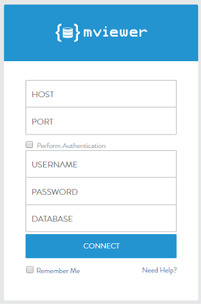
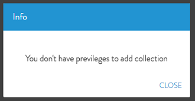

Getting Started
- From the mViewer extracted folder, run <start_mViewer.bat> or <start_mViewer.sh>. The mViewer Application is up and running.
- Launch http://127.0.0.1:8080/react/index.html in your web browser.
The Login Details page displays.
- Enter host and port details as shown in the figure below.

- You can select Perform Authentication to login in with a specific user and DB.
- When MongoDB is running Auth Mode then entering user cred's and DB are mandatory.
If the user is not Admin User than user has limited privileges.
For all the features which user do not have an privilege, an error message will be displayed as shown in the figure below.

- Click Connect
Add a user to the admin database of MongoDB
- Start the mongo process.
- See details as shown in Figure below.

You can login with these credentials as described.